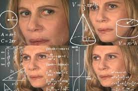

PROBLEMA
Por um lado muitas Pessoas com Deficiência (PCD) estão em busca de oportunidades de emprego, por outro lado as empresas têm dificuldade de se adequar a lei que exige a contratação desses profissionais, ficando muitas vezes irregulares ou com falta de efetivo no quadro de trabalho.
NICHO
Pessoas com Deficiencia (PCD) e empresas que buscam empregar tais pessoas.
PROPOSTA DE VALOR
Formar um canal de acesso entre as pessoas com PCD à empresas que buscam a contratação das mesmas, fazendo que a busca por emprego destas pessoas seja facilitada e assim regularizando estas empresas.
EQUIPE